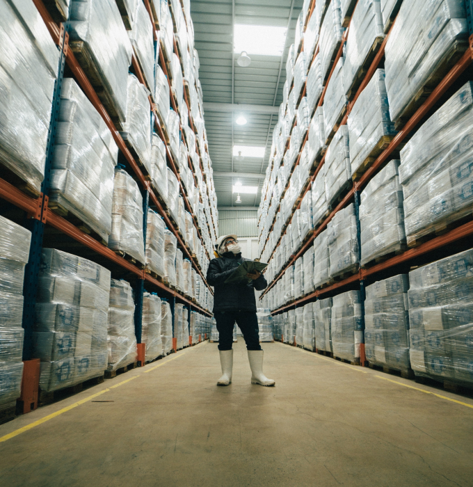

Case Study.
How did Purevirtual helped Nevorium to reduce their IT costs by 45%
while
reliability and user satisfaction to increase significantly.
Date: 18. 10. 2020
Production of building materials and potting soil.
Industry:
Production of building materials and potting soil.
Location:
Eifel near Mayen, Germany.
Number of employees:
100+
Number of computer workstations:
45+
Previous situation.
The previously used servers and clients are owned by the customer. The hardware was procuredthrough various service providers and dealers. There was no conclusive purchasing strategy or assetmanagement to monitor the inventory. Essentially, there were three contact persons:
→ Service provider ERP system (SAP)
→ Service provider BDE system (collection of data from production machines)
→ Service provider calculation system (calculation of product prices based on production)
→ Service provider hardware and first level
Since these four parties communicated relatively little with each other, it was the customers task to enforce his needs with the service providers and to "force" cooperation in some cases. All in all, the construct leads to the fact that "nobody felt responsible" for certain topics, both externally and internally in the customer company.

Previous situation.
→
High availability is required for production-relevant systems.
→
A central contact person for all strategic IT topics is necessary and should be available to the management as a consultant of integrity.
→
Despite a suboptimal Internet connection, the potential of cloud technology should be used as well as possible.
→
All employees must be able to work on the move.
→
IT costs were to be reduced and made plannable.
→
Fixed IT processes must be implemented, for example, the onboarding of a new employee or the implementation of a new component in the network.
Solution.

High availability is required for production-relevant systems.
The IT responsibility was outsourced to Purevirtual.
In order to combine the aspects of "availability" and "cloud", a local highly available server infrastructure was created for the important production processes. All less important processes run via innovative cloud services. If required, all employees can also access all company applications via secure channels on the move. Purevirtual bears full operational responsibility.
Server and client hardware was standardized and provided to the customer by Purevirtual. Purevirtual monitors all components technically and maintains an asset and lifecycle management. In case of hardware problems an on-site repair is coordinated by Purevirtual.
All IT requests are entered and processed via the customer interface of Purevirtual. There is a central contact point for all requests.
Recurring requests (onboarding of employees, ordering of new notebooks, etc.) are handled through jointly defined standard processes within the framework of predefined SLAs.
Through streamlined processes, unified hardware and proactive monitoring by Purevirtual, annual IT costs are reduced by 45% while reliability and user satisfaction increase significantly.
The customer can concentrate on his core business and thus significantly increase productivity.
45%
Reduced annual IT Costs.100%
Increased user satisfaction.Customer Testimonial.
"We didn’t previously have access to such quick response times as we do now with Purevirtual. They are always ready and waiting for our calls, should we have a problem that needs addressing."
Recent Case Studies.

How did Purevirtual helped Nevorium to reduce their IT costs by 45% while reliability and user satisfaction to increase significantly. Read Full Case Study
How did Purevirtual helped Nevorium to reduce their IT costs by 45% while reliability and user satisfaction to increase significantly. Read Full Case Study
How did Purevirtual helped Nevorium to reduce their IT costs by 45% while reliability and user satisfaction to increase significantly. Read Full Case Study
Schedule free initial consultation
Arrange your non-binding, free initail consultation now.
Schedule consultation